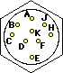

Back to EPL Engineering's Mainpage
This is the back of a female (power output) connector.

A white Chassis B blue Analog common C -17v (optional) D green -15v regulated E yellow +15v regulated F +17v (optional) H red +5 for digital circuitry J black Digital return K +12v (optional) for relays, motors, etc.
The connectors used are a 4-pin Jones 304 series, with pinout shown below as seen from the outside of the socket, or the inside of the plug. Note that the Circuit Ground which is the analog common is separate from the Chassis connection. They should remain separate in any equipment that you attach. This drawing is from the back of the female.